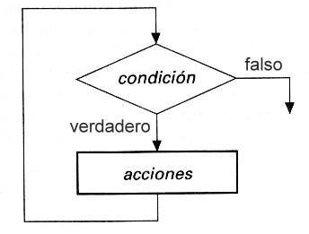
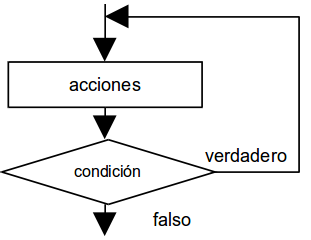
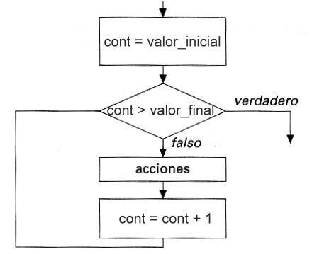

2.4. Estructura repetitiva (bucles)
XXX
Los ordenadores se diseñaron inicialmente para realizar tareas sencillas y repetitivas. El ser humano es de lo más torpe acometiendo tareas repetitivas: pronto le falla la concentración y comienza a tener descuidos. Los ordenadores programables, en cambio, pueden realizar la misma tarea muchas veces por segundo durante años y nunca se aburren.
La estructura repetitiva, por tanto, reside en la naturaleza misma de los ordenadores y consiste, simplemente, en repetir varias veces un conjunto de instrucciones. Las estructuras repetitivas también se llaman bucles, lazos, iteraciones o loops.
Los bucles tienen que repetir un conjunto de instrucciones un número finito de veces. Si no, nos encontraremos con un bucle infinito y el algoritmo no funcionará. Para conseguir que el bucle se repita sólo un número finito de veces, tiene que existir una condición de salida.
Por tanto, los bucles se componen, básicamente, de dos elementos:
a. Un cuerpo del bucle o conjunto de instrucciones que se ejecutan repetidamente. b. Una condición de salida para dejar de repetir las instrucciones y continuar con el resto del algoritmo.
Existen tres tipos de bucles:
- Bucle mientras (
while): la condición de salida está al principio del bucle. - Bucle hacer… mientras (
do...while): la condición de salida está al final del bucle. - Bucle para (
for): la condición de salida está al principio y se realiza con un contador automático.
2.4.1. Bucle mientras
El bucle while es una estructura que se repite mientras una condición sea verdadera:
while (condicion) {
acciones (cuerpo del bucle)
}
Su representación gráfica es esta:

Cuando se llega a una instrucción while, se evalúa la condición. Si es verdadera, se realizan las acciones y se regresa al principio de la instrucción while. Y así hasta que la condición se haga falsa.
Ejemplo: Escribir un algoritmo que muestre en la pantalla todos los números enteros entre 1 y 100.
int cont = 0;
while (cont < 100) {
cont = cont + 1;
System.out.println(cont);
}
2.4.2. Bucle hacer… mientras
El bucle do...while evalúa la condición de salida al final del bucle:
do {
acciones (cuerpo del bucle)
} while (condicion);

Las acciones del cuerpo de un bucle do...while se ejecutan al menos una vez, a diferencia del bucle while.
Ejemplo: Diseñar un algoritmo que escriba todos los números enteros entre 1 y 100 utilizando do...while:
int cont = 0;
do {
cont = cont + 1;
System.out.println(cont);
} while (cont < 100);
2.4.3. Bucle para (for)
Cuando el número de repeticiones es fijo y conocido de antemano, lo más cómodo es usar un bucle for:
for (inicializacion; condicion; incremento) {
acciones
}
El bucle for se representa de deferentes formas según el tipo de diagrama de flujo. Una representación habitual es la que lo muestra como un bucle while, pues en el fondo es lo mismo que un while controlado por contador:

Ejemplo 1: Diseñar un algoritmo que escriba todos los números enteros entre 1 y 100 utilizando un bucle for:
for (int cont = 1; cont <= 100; cont = cont + 1) {
System.out.println(cont);
}
Ejemplo 2: Diseñar un algoritmo que escriba todos los números enteros impares entre 1 y 100:
for (int cont = 1; cont <= 100; cont = cont + 2) {
System.out.println(cont);
}